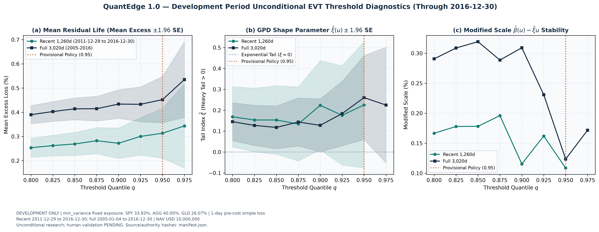
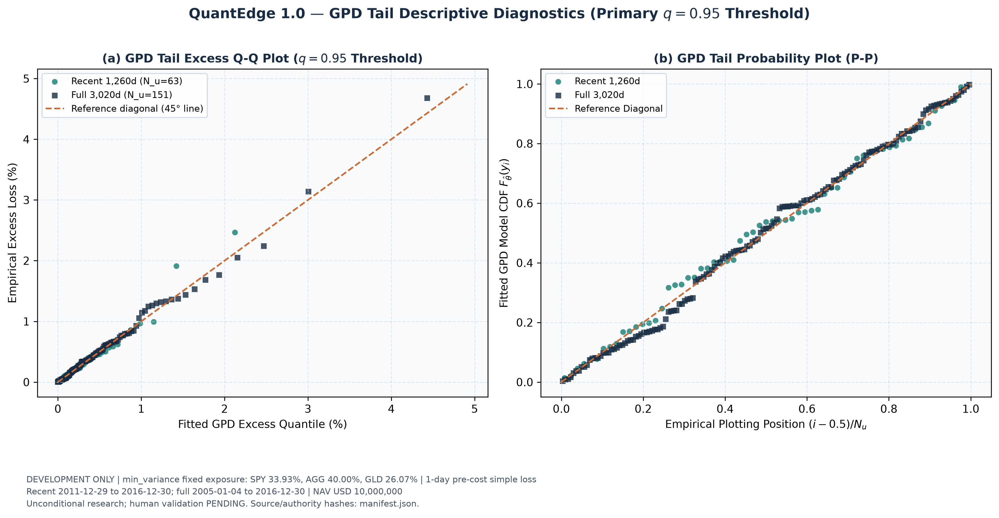
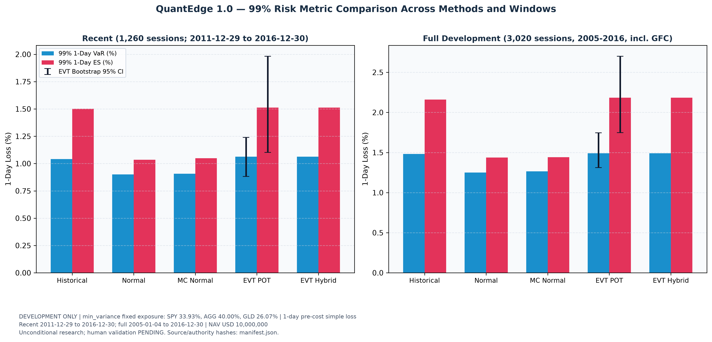

DEVELOPMENT ONLY (Through 2016-12-30) Dataset: qe1_20050101_20261030_r3_6c4633a7ba Config Hash: 587ddbe363589fb6...
Evaluation of candidate thresholds from 80% to 97.5%. The primary provisional policy is fixed at $q=0.95$ with minimum 50 strict exceedances.

Descriptive excess quantile and probability plots for strict exceedances above the 95% loss threshold. No uncalibrated parametric GOF p-values are claimed.

1-day 99% VaR and Expected Shortfall across Historical, Parametric Normal, Monte Carlo Normal, and EVT (POT and Body/Tail Hybrid), with 95% moving-block bootstrap confidence intervals.
